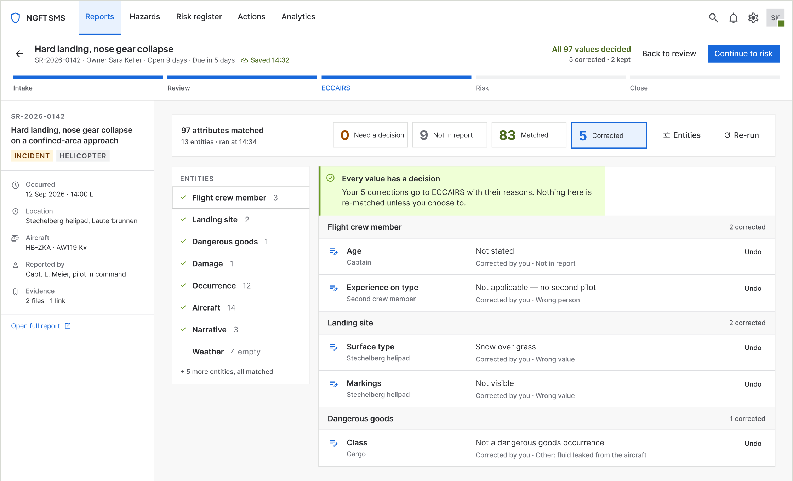
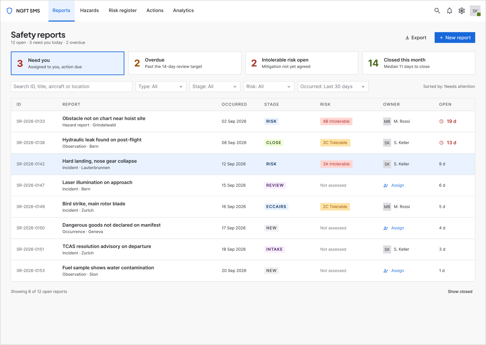
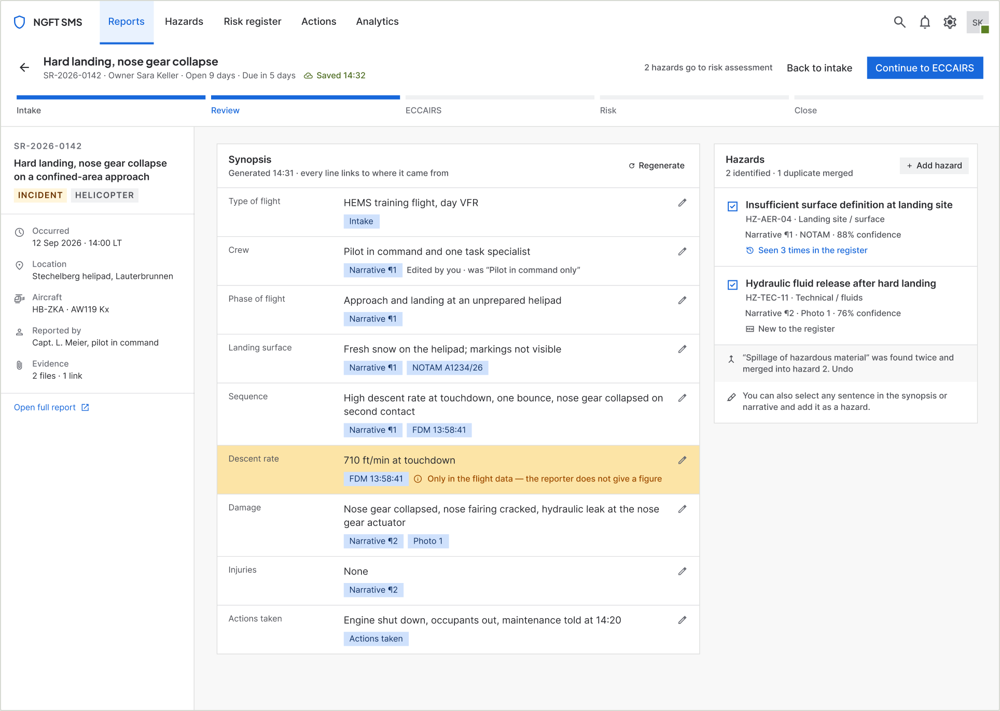
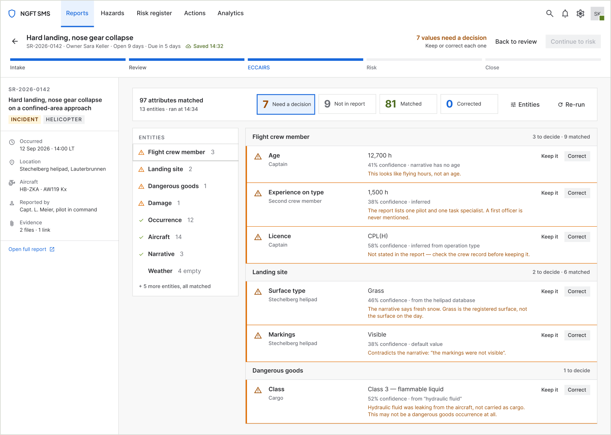
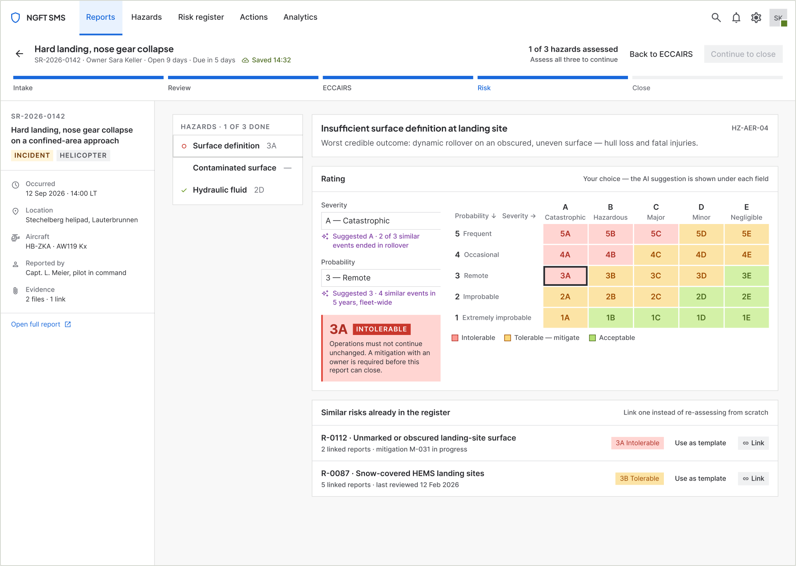
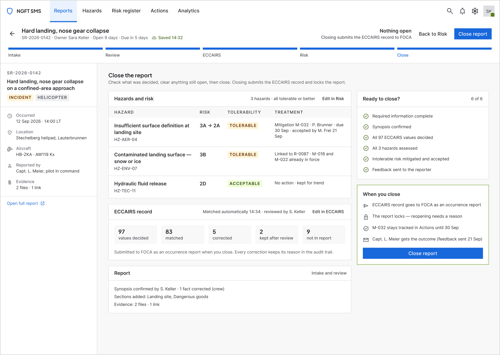
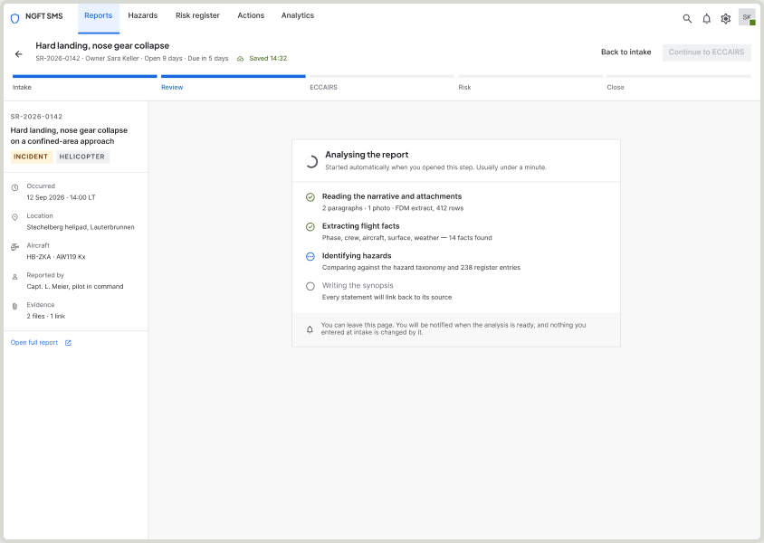
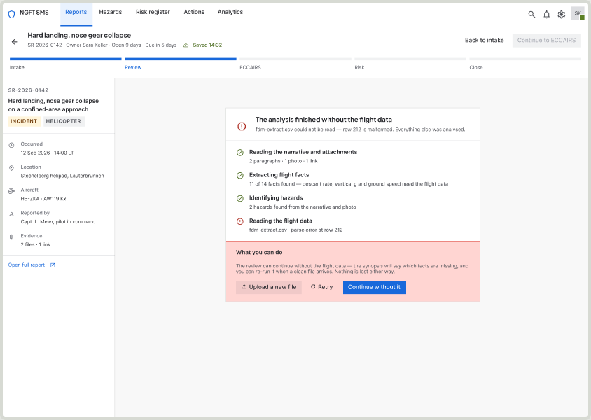
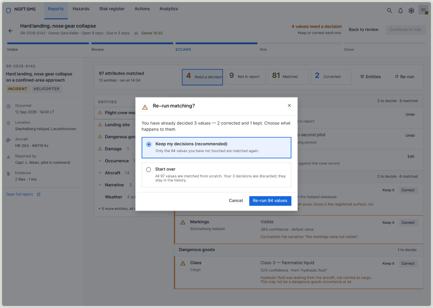
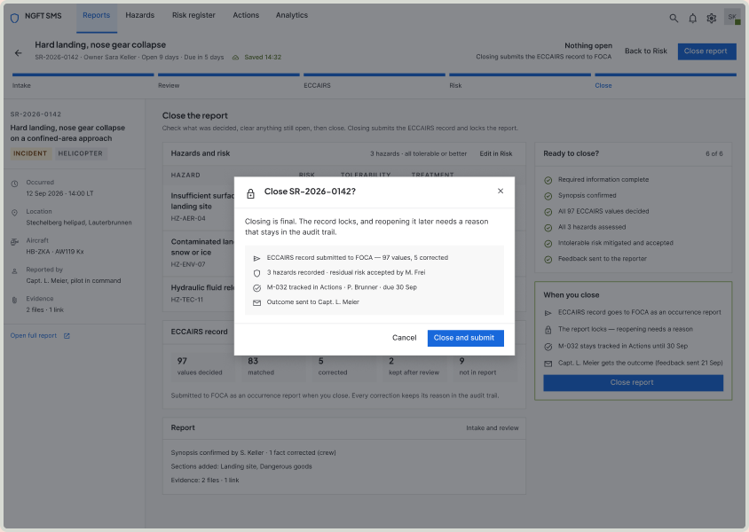

Incident management · Safety reporting · Proof of concept
A two-day safety report,redesigned as one guided flow
Helicopter operators investigate every safety report by hand across a spreadsheet, Word files and a legacy system. I designed a single flow where the AI does the first pass and the safety manager makes the decisions.
Role
Sole product designer
Team
Me, with a BA on research
Timeline
2 months
Research
12 safety managers
Status
Proof of concept, not yet built

Screen 12 · ECCAIRS, all decided
01The problem
Every report is rebuilt by hand, three times
A safety report arrives as free text. The safety manager then reads it, rates the risk, keeps a record in Excel and Word, and re-enters it field by field into a legacy system to produce the ECCAIRS record the authority needs.
Nothing connects those steps, so the same facts are typed again at every one.
“A normal report takes about two days.”
Safety manager, during research
Re-typed into ECCAIRS
Dozens of attributes entered one by one, from a report that already contains most of the answers.
Risk rated differently
Each manager applies the matrix their own way, so the same hazard gets different ratings.
No view of what is open
Nothing shows which reports are overdue, who owns them, or which carry an intolerable risk.
02Research
Twelve operators, watched as well as asked
12
Safety managers interviewed
A BA visited twelve operators and interviewed the safety manager at each one.
12
Procedures observed
The BA also observed each procedure closely, which shows the steps people skip when they describe their work.
1
Legacy system, first-hand
I had access to the old system and a recording of a manager using it, which showed exactly where time goes.
The same three pains came up across the operators. They set the brief: remove the re-typing, make risk consistent, and show what is open.
03Key decisions
Five decisions that carry the flow
Decision 1
Start with what’s urgent
The inbox puts what needs the safety manager first. Every row shows the risk level, days open, owner and due date.
Counts for overdue reports and intolerable risks sit on top, so the riskiest report is never buried.

01 — Inbox
Decision 2
The AI does the first pass. The manager decides.
Analysis starts when the report opens. It writes a synopsis linked to the source sentences and suggests hazards from the taxonomy.
Nothing is accepted without the manager. Every suggestion can be kept, corrected or removed.

06 — Review · synopsis and hazards
Decision 3
Review ECCAIRS by exception
The system matches every ECCAIRS attribute from the report. The manager only sees the values it is unsure of, with its reason.
Keep or correct it, with a one-tap reason for the audit trail. This replaces the re-typing that research named as the biggest pain.

09 — ECCAIRS · review by exception
Decision 4
One screen for risk, one rule for everyone
Severity and probability sit side by side with the ICAO 5×5 matrix, so every manager reaches a rating the same way.
Similar risks from the register appear alongside. A recurring hazard is linked instead of assessed again from scratch.

13 — Risk · assessing a hazard
Decision 5
A real finish line
Closing shows what was decided, what is still open and one final action. It stays blocked until an intolerable risk has an accepted mitigation.
A closed report locks, with every change and correction in its audit trail.

17 — Close · ready to close
Every state designed, not only the happy path
19 states across six steps, including the ones that usually get left to engineering.

AI analysis running

Analysis partly failed

Re-run would overwrite decisions

Irreversible close, confirmed
04Response
Leadership first, then the people who do the work
I presented the concept to leadership, then to the safety managers it was designed for.
The reaction was immediate, from safety managers and leadership alike.
“This is revolutionary.”
Safety manager, at the concept review (paraphrased)
05Next
Proving it against the two-day baseline
This is a proof of concept. Nothing is built or measured yet, so the next step is to test it on real reports with the same operators.
Time to close
From report received to closed, against the “about two days” reported today.
ECCAIRS corrections
How many matched values a manager changes per report. This is the AI’s real accuracy.
Rating agreement
Two managers rate the same report. The matrix should make them agree.
Screens use invented data. Names, registrations and reference numbers are not real.